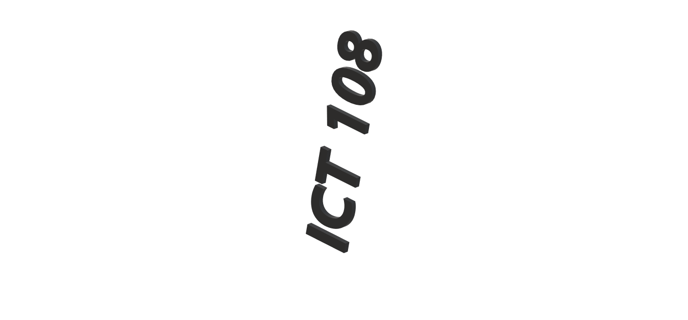
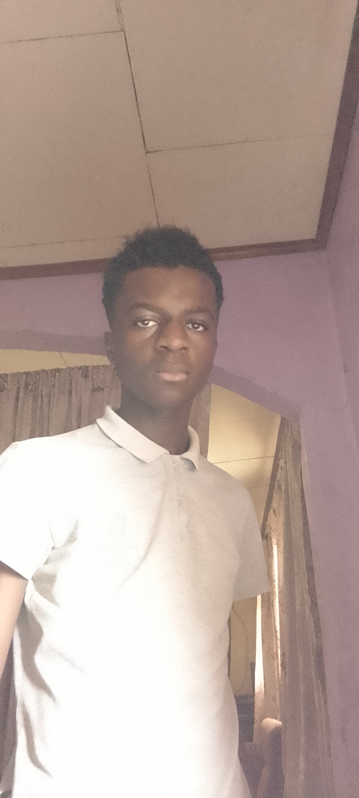

Présentation de l'Étudiant
Nom: KITIO
Prénom: Emmanuel
Âge: 19 ans
Matricule: 24H2181
Sexe: Masculin
Université:Yaoundé 1
Filière: ICT4D

À propos de moi
Je suis un étudiant passionné par le développement web et les nouvelles technologies. Actuellement en première année de licence d'informatique professionnel(ICT4D), je me forme sur les différents langages de programmation. J'aime apprendre de nouvelles compétences et travailler sur des machines. Mon objectif est de devenir développeur full-stack et de contribuer à des projets open-source.
En dehors des études, je pratique le basketball et je m'intéresse au gaming.